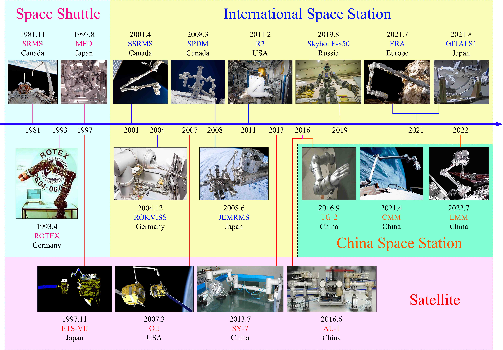
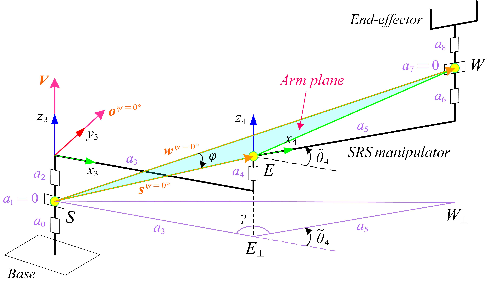

Boyu Ma, Zongwu Xie*, Zainan Jiang*, Yang Liu, Yiming Ji, Baoshi Cao, Zhengpu Wang,
Hong Liu
The International Journal of Robotics Research (IJRR), , 2025
(Accepted, in Production)
|
|
Robotic redundancy via arm angle self-adaptation through nullspace resolution: Offset poses a challenge Boyu Ma, Zongwu Xie*, Zainan Jiang*, Yang Liu, Yiming Ji, Baoshi Cao, Zhengpu Wang, Hong Liu The International Journal of Robotics Research (IJRR), , 2025 (Accepted, in Production) |
|---|

|
Actual shape-based obstacle avoidance synthesized by velocity–acceleration minimization for redundant manipulators: An optimization perspective Boyu Ma, Zongwu Xie, Bowen Zhan, Zainan Jiang, Yang Liu*, Hong Liu IEEE Transactions on Systems, Man, and Cybernetics: Systems (TSMC), 2023 [Paper link] |
|---|
|  |
Advances in space robots for on-orbit servicing: A comprehensive review Boyu Ma, Zainan Jiang*, Yang Liu, Zongwu Xie Advanced Intelligent Systems (AISY), 2023 Both the Wiley Top-Cited and Top-Viewed Awards [Paper link] |
|---|

|
Neurodynamics-based configuration transformation with engineering application to robot manipulators using two intelligent approaches Boyu Ma, Zongwu Xie, Xiaohang Yang, Yang Liu, Zhengpu Wang， Zainan Jiang* Engineering Applications of Artificial Intelligence (EAAI), 2023 [Paper link] |
|---|
|  |
Precise semi-analytical inverse kinematic solution for 7-DOF offset manipulator with arm angle optimization Boyu Ma, Zongwu Xie, Zainan Jiang*, Hong Liu Frontiers of Mechanical Engineering (FME), 2021 [Paper link] |
|---|